Designing self-serve onboarding for
complex enterprise systems.
Fynd's Warehouse Management System required manual backend support for every new warehouse onboarding — making it slow, resource-heavy, and impossible to scale.
Before designing anything, I needed to understand why users couldn't complete onboarding independently.
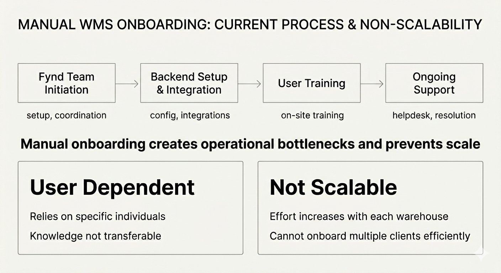
WMS involves strict hierarchical dependencies: Warehouse → Zone → Rack → Bin. Users struggled with where to start, what depends on what, and when they were "done."
What prevents warehouse operators from completing onboarding independently?
What mental models do users have about warehouse structure, and how does the system misalign with them?
Four methods across desk, field, and system.
Direct access to warehouse operators was limited, so I combined four complementary research methods to build a complete picture from different angles.
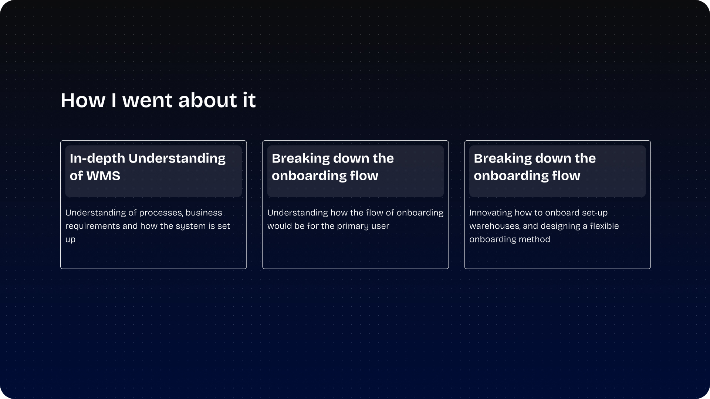
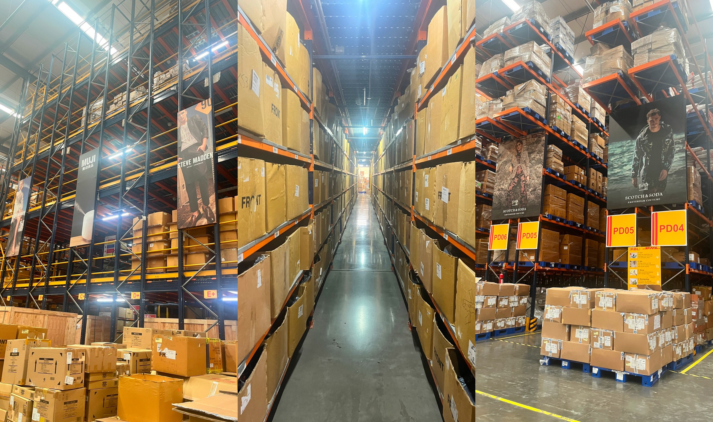
- Studied onboarding UX principles: guided interactions, progressive disclosure, clarity
- Analysed major WMS platforms: Oracle, Softeon, Manhattan Associates, Blue Yonder
- Manhattan Associates: powerful but complex implementation acts as a barrier for smaller firms
- Softeon: modularity lets companies choose only what they need — reduces overcomplication
- Blue Yonder: AI-driven insights improve decision-making — high-value benchmark
- On-site visit to a client warehouse to observe real operations
- Observed inbound processes: receiving, GRN, quality checks, putaway
- Found that a single PO can have multiple ASNs — system must handle this complexity
- Good Received Number comes from the transporter — requires external data integration
- Workers think spatially; system presents hierarchical data tables
- Week 1 — WMS Mapping: business requirements and current system setup
- Weeks 2–3 — WMS Flows: broke down complex onboarding journeys for each persona
- Identified friction areas where users skip mandatory fields or get stuck
- Documented edge cases in Layout Setup, Inbound, and Outbound flows
- Used Mobbin to study trial onboarding flows (Odoo, SKU Savvy) as reference
- Worked closely with backend and product teams throughout
- Identified specific steps requiring consistent manual intervention
- Understood data importation constraints from Fynd Commerce Platform
- Confirmed all users receive training before using WMS — inherent complexity acknowledged
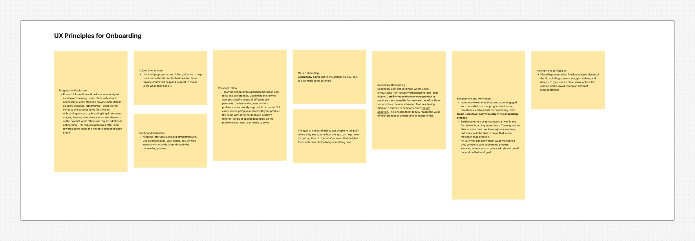
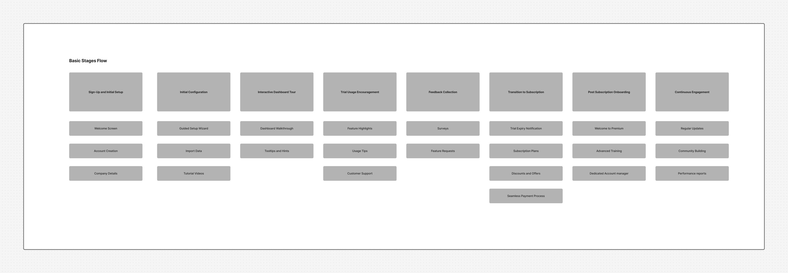
Six insights that reframed
the design problem entirely.
The existing process was not self-serve — backend teams manually configured every new client, creating a bottleneck that made scaling impossible.
- Each new warehouse required individual backend intervention
- Could not onboard multiple clients simultaneously
- Knowledge was not transferable — reliant on specific individuals
Users aren't homogeneous — Supervisors/Admins work on desktop while Workers use Handheld Terminals for real-time tasks.
- Supervisors and Admins: desktop, configuration and management focus
- Workers: HHT-based, real-time scanning and putaway tasks
- All users receive training before using WMS — inherent complexity acknowledged
The warehouse visit revealed that staff think spatially about their work — the system presents abstract hierarchical tables.
- Staff think in physical zones and storage areas, not data entities
- A single PO can have multiple ASNs — system must handle this
- Good Received Number comes from transporter — external data dependency
Users had no visibility into entity relationships — dependency violations were the primary cause of failed onboardings requiring backend fixes.
- Users tried to create bins before racks existed
- Set up inventory before warehouse structure was complete
- No system feedback on what was blocking progress
Each competitor's weakness directly informed a specific design decision for the WMS onboarding solution.
- Manhattan Associates: complex implementation → simplified guided onboarding to lower the barrier
- Softeon: modular solutions → checklist where users configure zones, racks, bins independently
- Blue Yonder: unintuitive UI → prioritised clarity and simplicity above all else
- Reference tools: Odoo and SKU Savvy trial flows studied via Mobbin
Most users are already on the Fynd Commerce Platform — onboarding should import existing data rather than require re-entry of what the system already knows.
- Inventory, company details, users, and warehouse data available via extensions
- Catalogue Sync from Fynd Platform can automate a key onboarding step
- Users discover WMS via marketplace — the path must feel seamless, not disconnected
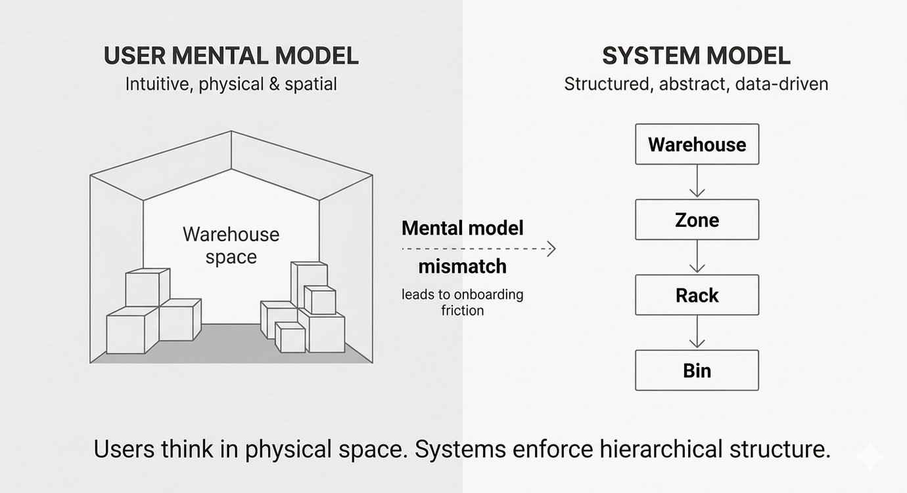
From brief to research-backed strategy.
4 Research-Backed Design Principles
Four iterations driven by
friction areas and edge cases.
Mapped the basic logic of account creation and redirection from the Fynd Commerce Platform to WMS. Established the entry point architecture — but contained no user-facing onboarding configuration steps yet.
Introduced the first layer of user-facing configuration. Began shaping onboarding as a step-by-step experience rather than a raw module dump. Identified that preferences alone don't address the heavier layout setup complexity.
Expanded the configuration surface — Measurement System (Metric vs. Imperial) and Currency. Flow mapping at this stage surfaced the key friction areas: heavy data entry volume and the edge case of users who already had physical stock needing to be mapped.
Resolved all identified friction areas in the final version. Each design decision maps directly to a specific finding from research and flow mapping.
- Heavy data entry → Default Data auto-populates fields users choose to skip
- Existing inventory edge case → Modal: "Do you have active inventory to map?"
- Field irrelevance → Toggle to hide Invoice Number, Vendor for specific flows
- Dependency blocker → Auto-redirect to Teams if no Pickers assigned during wave creation
- Progress visibility → 10% → 20% → 40% → 60% → 80% stepper on dashboard
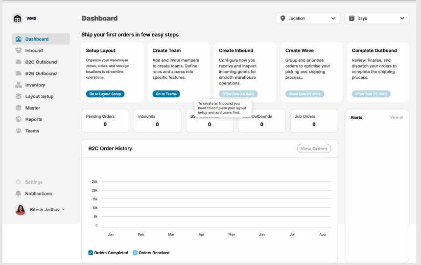
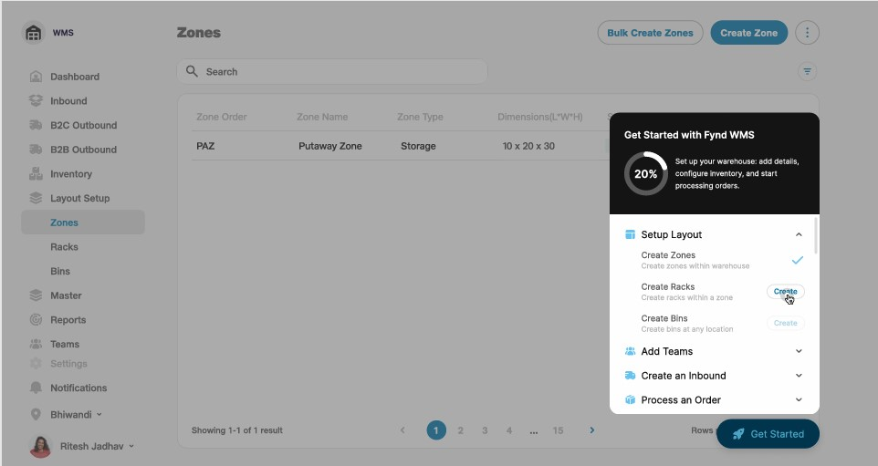
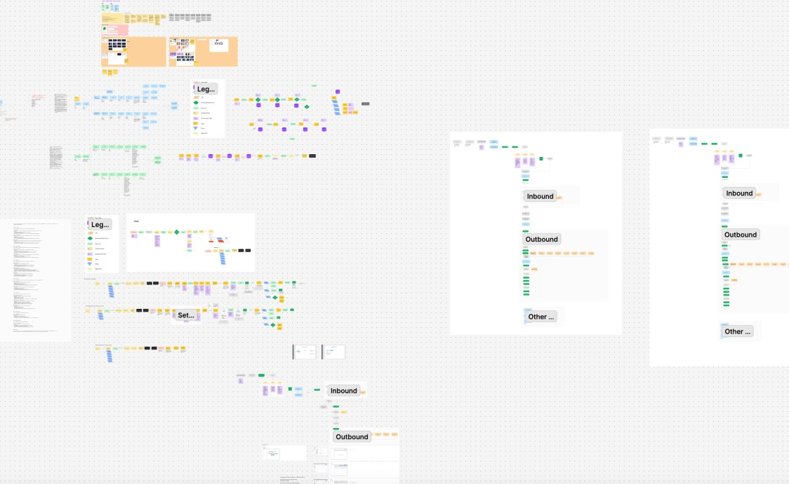
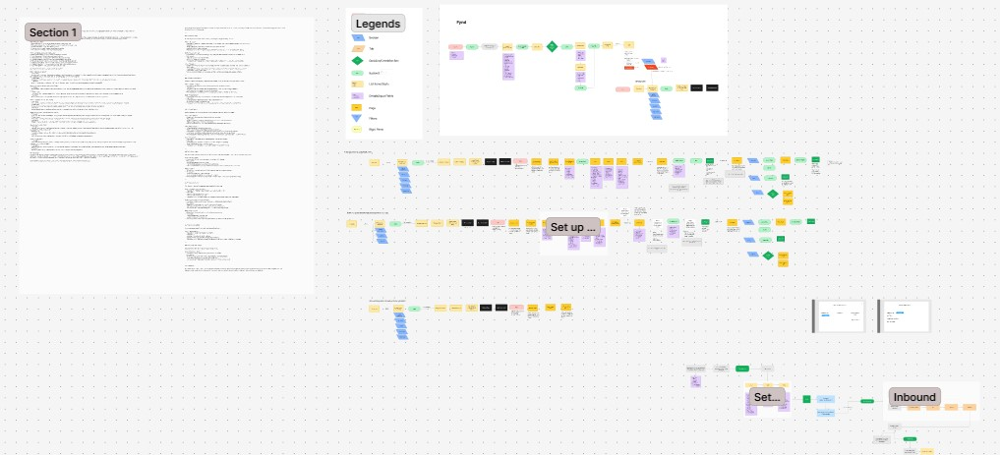
Usability testing with actual warehouse operators (5–8 users) · Quantitative baseline of current backend support tickets per onboarding · A/B testing default data vs manual entry · Post-launch measurement of time-to-operational per new client
From feature-based to task-based onboarding.
Research showed users think in tasks, not features. The solution restructures the entire onboarding flow around user goals.
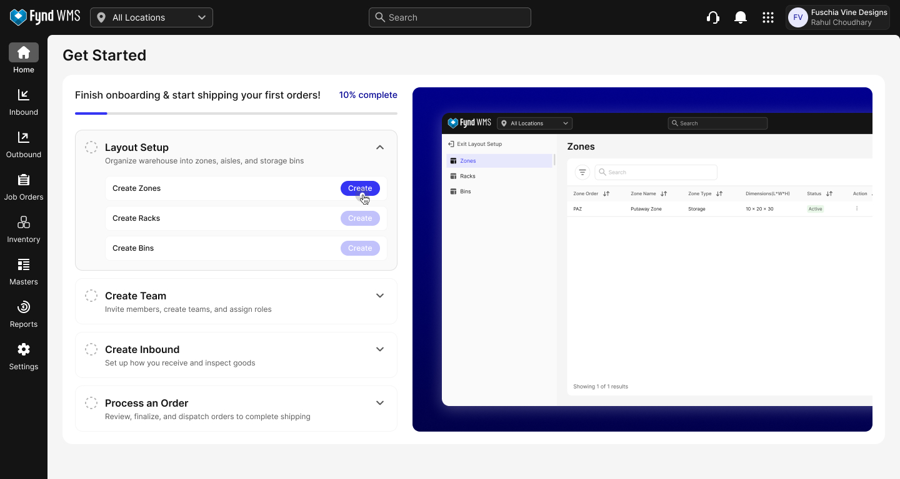
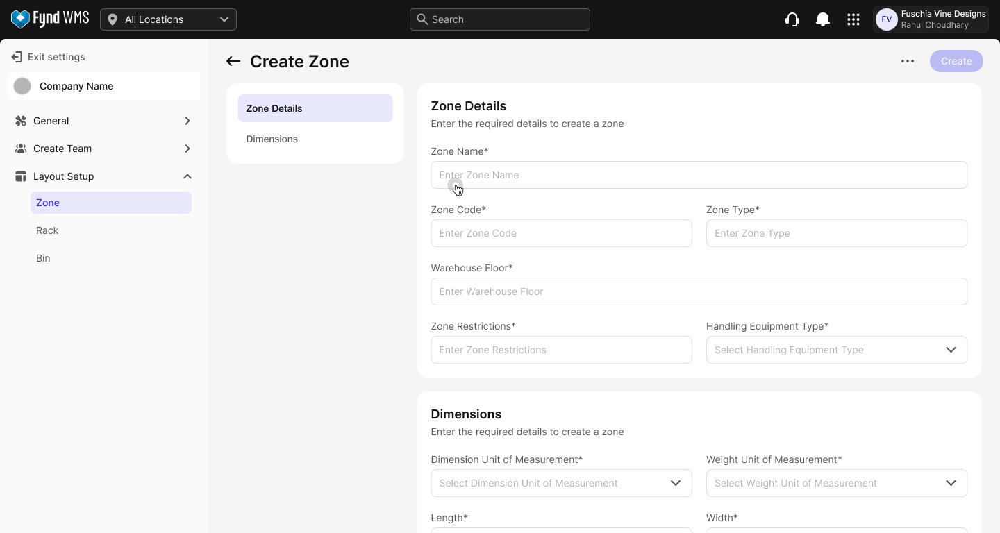
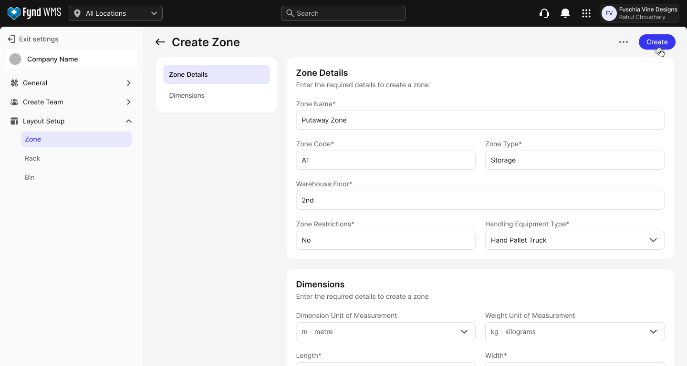
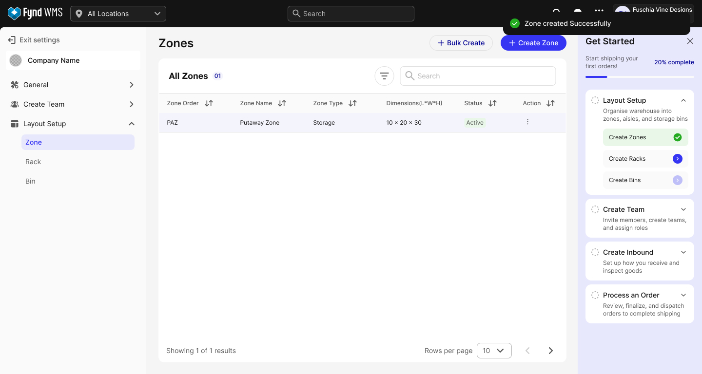
The Onboarding Checklist — Step by Step
Visual progress bar: 10% → 20% → 40% → 60% → 80% → 100% gives users a clear sense of journey · "My Onboarding Checklist" overlay on dashboard — Start/Go for incomplete tasks, checkmark animations for completed · Dependency feedback: "To create an Inbound you need to complete your layout setup and add users first" · Tooltips guide to the next module once a task is done
Key Features of the Final Solution
Users define warehouse dimensions, then create zones, racks, and bins in the correct dependency order
Addresses
Dependency blindness — steps lock until prerequisites complete
Automatically imports existing inventory and company data from the Fynd Commerce Platform via extensions
Addresses
Insight 6 — leverage existing platform data, no manual re-entry
Supervisors create user accounts and assign roles (Admin, Worker) within the onboarding flow
Addresses
Diverse persona needs — workers get HHT access configured from day one
Streamlined first inbound (GRN, QC, putaway) and outbound (wave creation, picklist) visible immediately to workers on HHT
Addresses
Physical-digital mismatch — On-site warehouse insights directly informed these flows
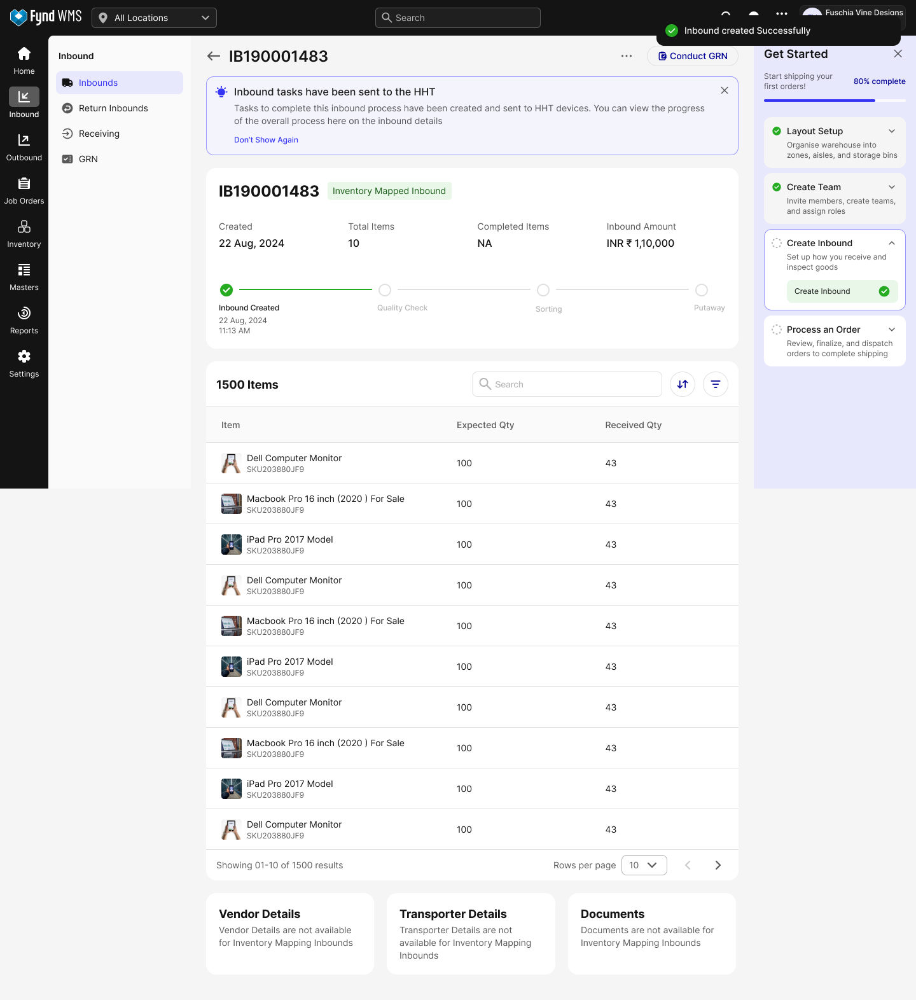
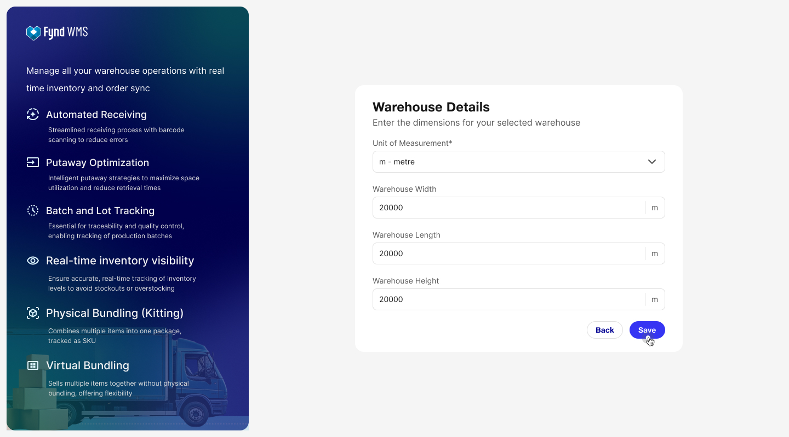
Outcomes & Reflections
- System analysis
- Contextual observation
- Secondary research
- Stakeholder interviews
- Research synthesis
- Research-to-design translation
- Identified core problem: mental model mismatch
- Established 4 research-backed design principles
- Validated task-based approach through research
- Informed 3 iterations toward final solution
Project Deliverables
A 3-month internship that turned
manual bottlenecks into self-serve flows.
This project required understanding a genuinely complex system — multiple user personas, strict dependencies, real warehouse operations — before designing a single screen. The warehouse site visit, competitive benchmarking, and weeks of flow mapping gave the solution its credibility.
The final onboarding checklist eliminates the need for backend intervention in standard client onboarding, allows multiple clients to be onboarded simultaneously, and gives warehouse operators a clear, trackable path from zero to operational — independently.
Thank you for reading ✦